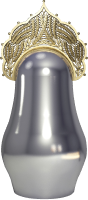
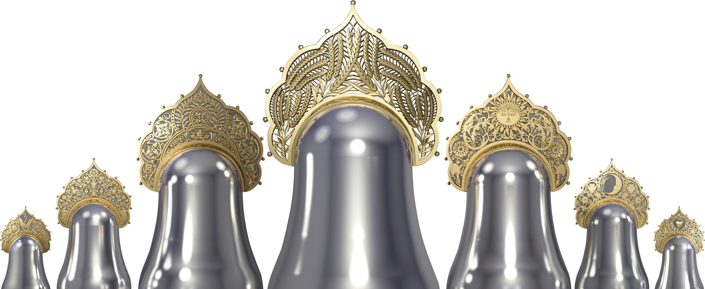
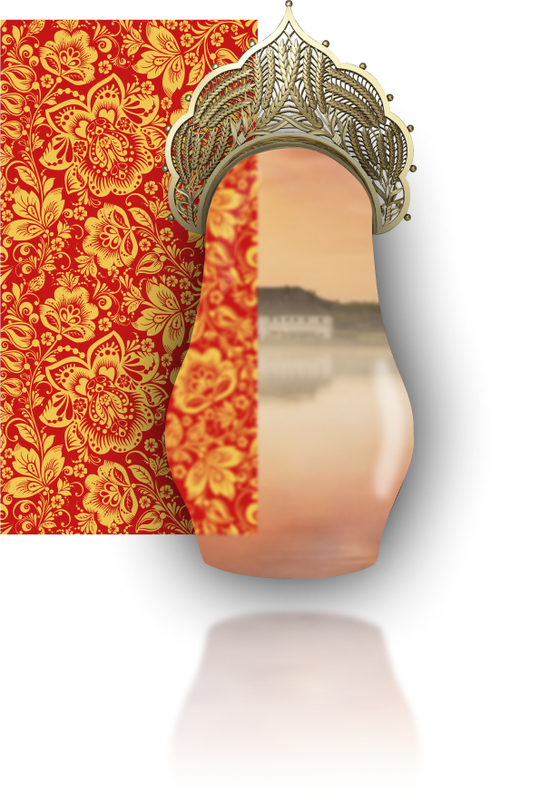
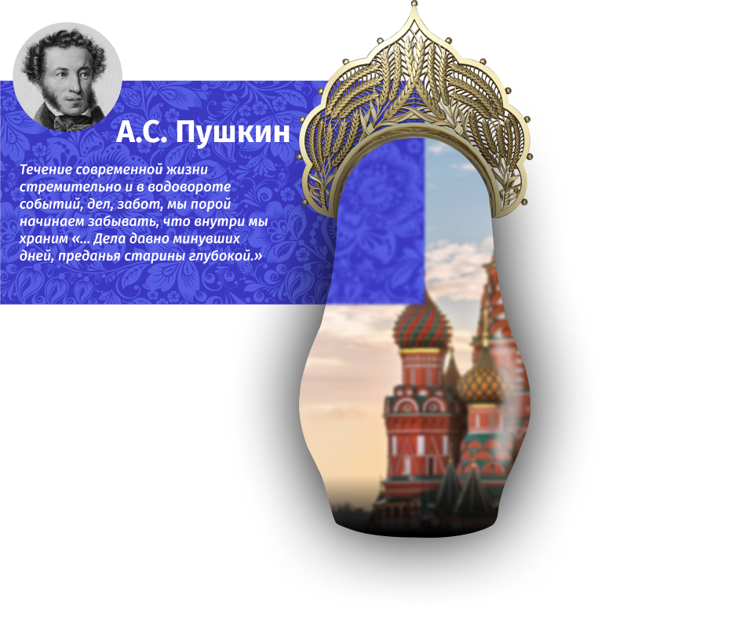
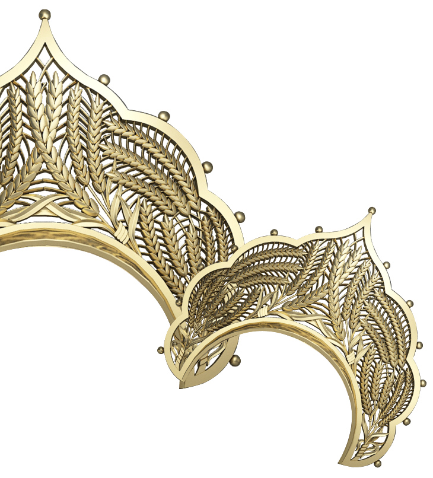
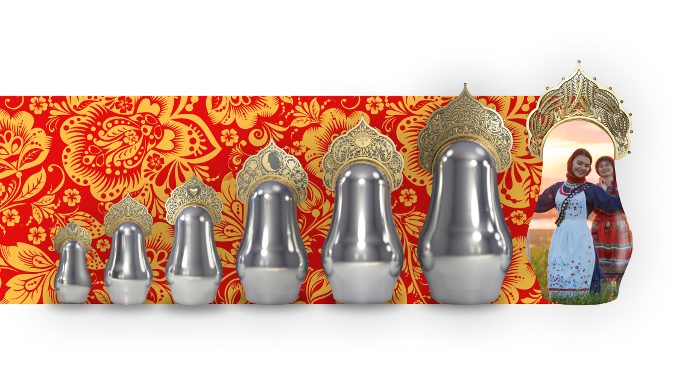
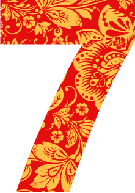

МАТРЁШКИ
Арт-объект
Кутузовский проспект, 2/1,
стр. 1, Москва, Россия
стр. 1, Москва, Россия
Матушка россия
вековые традиции
России
России



Весь мир отражается в зеркальных Матрешках
Арт-объект и достопримечательность «Матрёшки» станет заметным визуальным акцентом Москвы. Однако
его актуальность для города не исчерпывается декоративным значением: он может стать символическим
«мостом» между богатыми традициями прошлого и настоящим.
Посредством скульптуры переплетены вековые традиции России и современные тенденции в искусстве –
поэтому этот образ будет близок всем поколениям.
Данный арт-объект в будущем может претендовать на роль символа и ассоциативного объекта России для
туристов, подобно Cloud Gate в Чикаго, Саду эмоций в Этрета и London Eye в Лондоне.
ПОЧЕМУ ИМЕННО
МАТРЁШКИ?
МАТРЁШКИ?
Этот образ ‒ самое точное олицетворение России. В классической форме матрёшек заключены вековые
традиции русского народа. Летят года, столетия, а традиции остаются неизменными. Сама же
фундаментальность форм говорит о величии и несгибаемом русском духе.
Зеркальная поверхность из нержавеющей стали отражает реальность настоящего времени, текущего
момента «здесь и сейчас», где последующее мгновение постоянно изменчиво, как настроение, погода,
стремительно убегающее время и сам ход жизни. Разные размеры скульптур, от маленькой до большой,
символизируют разные этапы развития человека в целом: физически, интеллектуально, социально и
духовно.


СИМВОЛИЗМ

МАТРёШКА
Матрешка-игрушка, воплощающая народные традиции, образ самой жизни и ее продолжения. Матрешки
установлены без постаментов, что символизирует равенство.
КОКОШНИК
Это старинный русский головной убор, часть национального костюма. Ажурные кокошники на матрёшках
демонстрируют разные грани и символы русских традиций, вплетённых в прозрачные кружевные узоры.

ПОЧЕМУ СЕМЬ?
Семь — символ тайны, удачи, везения, вера во всё волшебное и сказочное, счастливое число. Заключает
в себе цикличность, созидание, ход времени (семь дней недели, семь нот, семь цветов радуги). Часто
встречается в русских пословицах и поговорках: «за семью печатями», «семь раз отмерь, один раз
отрежь», «семеро одного не ждут».
КОНТАКТНЫЕ ДАННЫЕ
Адрес
Кутузовский проспект, 2/1, стр. 1, Москва, Россия
©2021 “МАТРЁШКИ” Все права защищенны
©2021 “МАТРЁШКИ” Все права защищенны
Почта